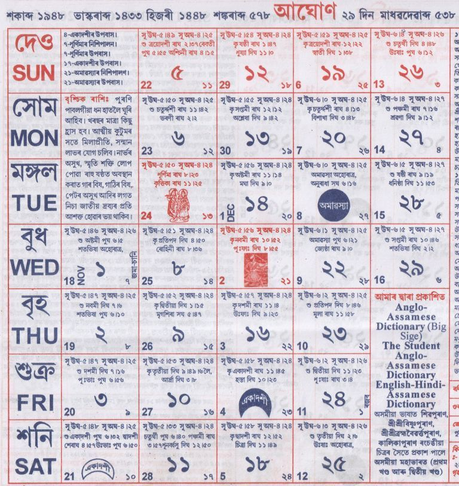

|
আঘোণ
|
|

|
১ আঘোণ - জগদ্ধাত্রী পূজা, বিভিন্ন ঠাইত ৫ দিনীয়া উৎসৱ।
২ - স্মৃতি দিৱস (গাংমৌ থান)।
৩ - গীতা জয়ন্তী মহোৎসৱ।
৪ - সত্ৰ তিথি অনুষ্ঠান, আশ্ৰম প্ৰতিষ্ঠা দিৱস।
৫ - সত্ৰাধিকাৰ স্মৃতি অনুষ্ঠান।
৬ - বৈকুণ্ঠ চতুৰ্দ্দশী, ৰাসযাত্ৰা আৰম্ভ।
৭ - ৰাসযাত্ৰা মহোৎসৱ, বীৰ লাচিত দিৱস, গুৰু নানক জন্মদিন।
৮ - সত্ৰ তিথি অনুষ্ঠান।
৯ - বিভিন্ন সত্ৰত তিথি পালন।
১০ - সত্ৰ অনুষ্ঠান।
১১ - তিথি অনুষ্ঠান।
১২ - মামনি ৰয়চম গোস্বামী স্মৃতি দিৱস।
১৩ - স্মৃতি দিৱস পালন।
১৪ - গীতা জয়ন্তী, বিভিন্ন তিথি অনুষ্ঠান।
১৫ - চ্যুকাফা দিৱস।
১৬ - সত্ৰ তিথি অনুষ্ঠান।
১৭ - বিভিন্ন স্মৃতি অনুষ্ঠান।
১৮ - সত্ৰাধিকাৰ তিথি।
২০ - জ্যোতিষী স্মৃতি দিৱস।
২১ - কালী পূজা, প্ৰতিষ্ঠা দিৱস।
২২ - কীৰ্ত্তন পাঠ অনুষ্ঠান।
২৩ - শ্বহীদ দিৱস।
২৪ - গীতা জয়ন্তী মহোৎসৱ।
২৫ - সত্ৰ তিথি অনুষ্ঠান।
২৬ - সত্ৰাধিকাৰ স্মৃতি।
২৭ - আশ্ৰম প্ৰতিষ্ঠা উৎসৱ।
২৮ - ভাগবত পাঠ।
২৯ - তিথি অনুষ্ঠান।
|
|
ৰবিশুদ্ধি: মিথুন, কন্যা, মকৰ, কুম্ভ; ১৩ তাৰিখৰ পৰা মিথুন, কন্যা, তুলা, মকৰ, কুম্ভ আৰু মীন।
|
|
গুৰুশুদ্ধি: মেষ, কৰ্কট, তুলা, ধনু আৰু কুম্ভ।
|
|
জ্যোতিষতত্ত্ব: এই মাহত জন্মা ব্যক্তি ধনবান, তীৰ্থাভিলাষী আৰু আকর্ষণীয় স্বভাৱৰ হয়।
|
শুভকাৰ্য্য:
বিবাহ: ৫, ৭, ৮, ৯, ১২, ১৩, ১৮, ২৮
পঞ্চামৃত: ৩, ৪, ৬
সাধভক্ষণ: ৯, ১
নামকৰণ: ৪, ৯, ১০, ১৪, ১৮, ২৮
মুখ্যান্নপ্ৰাশন: ১৩
গৃহপ্ৰৱেশ: ৯, ১০, ১১, ১২, ১৩, ১৪
হালখতি: ৩, ১৪, ১৭, ২৮, ২৯
|